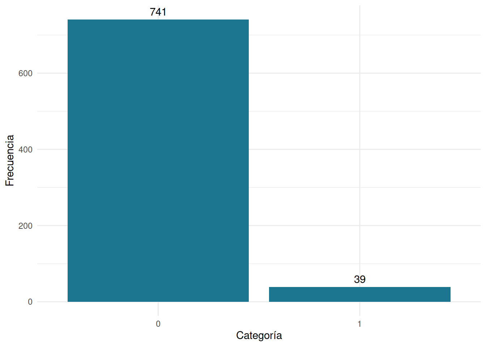

En el mundo financiero, la gestión de créditos es una tarea fundamental para los bancos y las instituciones financieras. La capacidad de predecir con precisión si un cliente cumplirá o no con sus pagos es esencial para mantener la estabilidad y la rentabilidad de la institución. En este ejercicio, utilizaremos como variable dependiente la categoría “default”, donde 0 representa a los clientes que cumplen con sus pagos y 1 a aquellos que no lo hacen. Las variables independientes serán:
A través de este análisis, exploraremos cómo estas variables influyen
en la probabilidad de incumplimiento de pago, y construiremos un modelo
logit para ayudarnos a tomar decisiones financieras más informadas. Para
ello se tomará la base de datos creditos, contenida en
paqueteMODELOS .
Iniciaremos con el reconicimiento de los datos
# remove.packages("paqueteMODELOS")
# devtools::install_github("dgonxalex80/paqueteMODELOS")
library(paqueteMODELOS)Loading required package: bootLoading required package: broomLoading required package: GGallyLoading required package: ggplot2Registered S3 method overwritten by 'GGally':
method from
+.gg ggplot2Loading required package: gridExtraLoading required package: knitrdata(creditos)head(creditos)# A tibble: 6 × 5
default antiguedad edad cuota ingresos
<dbl> <dbl> <dbl> <dbl> <dbl>
1 1 37.3 77.0 3020519 8155593
2 1 37.3 73.8 1766552 6181263
3 1 31.0 78.9 1673786 4328075
4 1 9.73 51.5 668479 5290910
5 1 8.44 39.0 1223559 5333818
6 1 6.61 44.9 3517756 2710736
dplyr::glimpse(creditos)Rows: 780
Columns: 5
$ default <dbl> 1, 1, 1, 1, 1, 1, 1, 1, 1, 1, 1, 1, 1, 1, 1, 1, 1, 1, 1, 1,…
$ antiguedad <dbl> 37.317808, 37.317808, 30.978082, 9.728767, 8.443836, 6.6054…
$ edad <dbl> 76.98356, 73.77534, 78.93699, 51.52877, 38.96986, 44.87945,…
$ cuota <dbl> 3020519, 1766552, 1673786, 668479, 1223559, 3517756, 130479…
$ ingresos <dbl> 8155593, 6181263, 4328075, 5290910, 5333818, 2710736, 31697…
library(ggplot2)
# Crear un dataframe con los datos
data <- as.data.frame(table(creditos$default))
# Crear el gráfico de barras
ggplot(data, aes(x = Var1, y = Freq)) +
geom_bar(stat = "identity", fill = "#1C768F") +
geom_text(aes(label = Freq), vjust = -0.5) + # Agregar etiquetas de frecuencia
labs(x = "Categoría", y = "Frecuencia") +
theme_minimal()
# Etapa 3: División de datos
set.seed(123) # Fijar semilla para reproducibilidad
split_ratio <- 0.7 # Porcentaje de datos de entrenamiento
n_sample <- floor(split_ratio * nrow(creditos))
train_creditos <- creditos[sample(1:nrow(creditos), n_sample), ]
test_creditos <- creditos[-sample(1:nrow(creditos), n_sample), ]# Etapa 4: Modelado
modelo1 <- glm(default ~ antiguedad + edad + cuota + ingresos, data = train_creditos, family = "binomial")
summary(modelo1)
Call:
glm(formula = default ~ antiguedad + edad + cuota + ingresos,
family = "binomial", data = train_creditos)
Deviance Residuals:
Min 1Q Median 3Q Max
-0.8155 -0.3841 -0.2641 -0.1474 3.3322
Coefficients:
Estimate Std. Error z value Pr(>|z|)
(Intercept) -2.555e+00 1.062e+00 -2.406 0.01611 *
antiguedad -7.941e-02 3.162e-02 -2.511 0.01203 *
edad 1.338e-02 2.299e-02 0.582 0.56053
cuota 9.859e-07 3.163e-07 3.117 0.00183 **
ingresos -1.967e-07 1.262e-07 -1.559 0.11900
---
Signif. codes: 0 '***' 0.001 '**' 0.01 '*' 0.05 '.' 0.1 ' ' 1
(Dispersion parameter for binomial family taken to be 1)
Null deviance: 215.01 on 545 degrees of freedom
Residual deviance: 194.36 on 541 degrees of freedom
AIC: 204.36
Number of Fisher Scoring iterations: 7
modelo2 <- step(modelo1, direction = "backward")Start: AIC=204.36
default ~ antiguedad + edad + cuota + ingresos
Df Deviance AIC
- edad 1 194.69 202.69
<none> 194.36 204.36
- ingresos 1 197.14 205.14
- antiguedad 1 200.87 208.87
- cuota 1 204.19 212.19
Step: AIC=202.69
default ~ antiguedad + cuota + ingresos
Df Deviance AIC
<none> 194.69 202.69
- ingresos 1 197.27 203.27
- antiguedad 1 203.37 209.37
- cuota 1 204.29 210.29summary(modelo2)
Call:
glm(formula = default ~ antiguedad + cuota + ingresos, family = "binomial",
data = train_creditos)
Deviance Residuals:
Min 1Q Median 3Q Max
-0.7888 -0.3846 -0.2621 -0.1506 3.3180
Coefficients:
Estimate Std. Error z value Pr(>|z|)
(Intercept) -2.014e+00 4.863e-01 -4.141 3.46e-05 ***
antiguedad -6.847e-02 2.562e-02 -2.673 0.00753 **
cuota 9.717e-07 3.154e-07 3.081 0.00206 **
ingresos -1.890e-07 1.260e-07 -1.500 0.13363
---
Signif. codes: 0 '***' 0.001 '**' 0.01 '*' 0.05 '.' 0.1 ' ' 1
(Dispersion parameter for binomial family taken to be 1)
Null deviance: 215.01 on 545 degrees of freedom
Residual deviance: 194.69 on 542 degrees of freedom
AIC: 202.69
Number of Fisher Scoring iterations: 7
modelo3 <- glm(formula = default ~ antiguedad + cuota, family = "binomial", data = train_creditos)
summary(modelo3)
Call:
glm(formula = default ~ antiguedad + cuota, family = "binomial",
data = train_creditos)
Deviance Residuals:
Min 1Q Median 3Q Max
-0.7143 -0.3774 -0.2712 -0.1601 3.2025
Coefficients:
Estimate Std. Error z value Pr(>|z|)
(Intercept) -2.505e+00 3.729e-01 -6.719 1.83e-11 ***
antiguedad -8.163e-02 2.408e-02 -3.389 0.000701 ***
cuota 7.341e-07 2.634e-07 2.787 0.005318 **
---
Signif. codes: 0 '***' 0.001 '**' 0.01 '*' 0.05 '.' 0.1 ' ' 1
(Dispersion parameter for binomial family taken to be 1)
Null deviance: 215.01 on 545 degrees of freedom
Residual deviance: 197.27 on 543 degrees of freedom
AIC: 203.27
Number of Fisher Scoring iterations: 7
predicted_probs <- predict(modelo3, newdata = test_creditos, type = "response")
predicted_classes <- ifelse(predicted_probs > 0.8, 1, 0)
library(caret)Loading required package: lattice
Attaching package: 'lattice'The following object is masked from 'package:boot':
melanoma # Calcular métricas de evaluación
mc <- confusionMatrix(data = factor(predicted_classes, levels = c(0, 1)),
reference = factor(test_creditos$default, levels = c(0, 1)))
mc Confusion Matrix and Statistics
Reference
Prediction 0 1
0 224 10
1 0 0
Accuracy : 0.9573
95% CI : (0.9228, 0.9793)
No Information Rate : 0.9573
P-Value [Acc > NIR] : 0.583060
Kappa : 0
Mcnemar's Test P-Value : 0.004427
Sensitivity : 1.0000
Specificity : 0.0000
Pos Pred Value : 0.9573
Neg Pred Value : NaN
Prevalence : 0.9573
Detection Rate : 0.9573
Detection Prevalence : 1.0000
Balanced Accuracy : 0.5000
'Positive' Class : 0
# Ejemplo de sobremuestreo utilizando la biblioteca 'ROSE'
library(ROSE)Loaded ROSE 0.0-4train_creditos_balanced <- ROSE(default ~ ., data = train_creditos, seed = 1)$data
modelo4 <- glm(default ~ antiguedad + cuota, data = train_creditos_balanced, family = "binomial")
summary(modelo4)
Call:
glm(formula = default ~ antiguedad + cuota, family = "binomial",
data = train_creditos_balanced)
Deviance Residuals:
Min 1Q Median 3Q Max
-1.849 -1.016 -0.582 1.040 2.173
Coefficients:
Estimate Std. Error z value Pr(>|z|)
(Intercept) 2.656e-01 1.658e-01 1.602 0.109
antiguedad -6.268e-02 8.173e-03 -7.670 1.72e-14 ***
cuota 5.000e-07 1.056e-07 4.735 2.19e-06 ***
---
Signif. codes: 0 '***' 0.001 '**' 0.01 '*' 0.05 '.' 0.1 ' ' 1
(Dispersion parameter for binomial family taken to be 1)
Null deviance: 754.54 on 545 degrees of freedom
Residual deviance: 672.37 on 543 degrees of freedom
AIC: 678.37
Number of Fisher Scoring iterations: 4
# Etapa 5: Validación del modelo
predicted_probs <- predict(modelo4, newdata = test_creditos, type = "response")
predicted_classes <- ifelse(predicted_probs > 0.5, 1, 0)
library(caret)
# Calcular métricas de evaluación
mc <- confusionMatrix(data = factor(predicted_classes, levels = c(0, 1)),
reference = factor(test_creditos$default, levels = c(0, 1)))
mc Confusion Matrix and Statistics
Reference
Prediction 0 1
0 141 4
1 83 6
Accuracy : 0.6282
95% CI : (0.5628, 0.6903)
No Information Rate : 0.9573
P-Value [Acc > NIR] : 1
Kappa : 0.0481
Mcnemar's Test P-Value : <2e-16
Sensitivity : 0.62946
Specificity : 0.60000
Pos Pred Value : 0.97241
Neg Pred Value : 0.06742
Prevalence : 0.95726
Detection Rate : 0.60256
Detection Prevalence : 0.61966
Balanced Accuracy : 0.61473
'Positive' Class : 0
modelo5 <- glm(default ~ antiguedad + cuota, data = creditos, family = "binomial")
summary(modelo5)
Call:
glm(formula = default ~ antiguedad + cuota, family = "binomial",
data = creditos)
Deviance Residuals:
Min 1Q Median 3Q Max
-1.1330 -0.3498 -0.3016 -0.2262 2.9253
Coefficients:
Estimate Std. Error z value Pr(>|z|)
(Intercept) -2.887e+00 3.054e-01 -9.454 < 2e-16 ***
antiguedad -4.486e-02 1.682e-02 -2.667 0.007657 **
cuota 6.590e-07 1.930e-07 3.415 0.000638 ***
---
Signif. codes: 0 '***' 0.001 '**' 0.01 '*' 0.05 '.' 0.1 ' ' 1
(Dispersion parameter for binomial family taken to be 1)
Null deviance: 309.68 on 779 degrees of freedom
Residual deviance: 295.61 on 777 degrees of freedom
AIC: 301.61
Number of Fisher Scoring iterations: 6